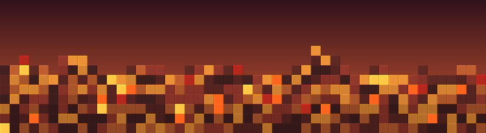

Scorched worlds

Stylised banner using the world's voxel palette — not an in-game screenshot.
Hot, volcanic, lava-flow planets. Rare-matter rich.
- Biome set
- scorched_biomes
- Distribution
- scorched_voxels
- Biome regions
- 18
- Voxel layers
- 8
- Unique ores
- 8
- Known planets
- TEST_01
Ores you can find here
Aggregated from every layer in this world's distribution. Frequency is the sum across layers (higher = denser); vein size is the largest m_extent seen; deepest Y is the lowest m_startY a layer with this ore occupies (lower Y = closer to the planet core).
| Voxel | Layers | Total freq | Max vein | Deepest Y |
|---|---|---|---|---|
| Cobalt | 8 | 104 | 60 | 0 |
| Polonium | 8 | 104 | 60 | 0 |
| Radium | 8 | 104 | 60 | 0 |
| Uranium | 8 | 104 | 60 | 0 |
| Gold | 7 | 72 | 90 | 15 |
| Petroleum | 7 | 72 | 85 | 15 |
| Silicon | 7 | 72 | 85 | 15 |
| Silver | 7 | 72 | 90 | 15 |
Altitude profile
Stylised slice of a planet — a mountain rising into the topmost band, the planet's interior below. Y is a radial coordinate from the planet's core, not altitude above sea level: Y 256 is the outermost rock shell, Y 0 is the core. The terrain heightmap carves into the outer shells, so anything near Y 256 is reachable by digging into a cliff or summit rather than going deep. That's why valuable voxels can show up in the very top band — they're "near the surface", just inside a peak. Hover an ore tile for its name and frequency; click to open the detail page.


Layer-by-layer breakdown
Each layer is a Y band (radial distance from the planet's core). The engine fills the band with whatever's in m_voxels (stone-class blocks) plus m_ores entries (the rare resource nodes). Layers are listed top-down — Y 256 is the outermost rock shell (where mountain peaks reach), low Y is closer to the core.
Layer 0 · Y 200 … 256 (4 voxels, 8 ore types)
Layer 1 · Y 155 … 200 (4 voxels, 8 ore types)
Layer 2 · Y 135 … 155 (3 voxels, 8 ore types)
Layer 3 · Y 105 … 135 (3 voxels, 8 ore types)
Layer 4 · Y 45 … 105 (3 voxels, 8 ore types)
Layer 5 · Y 30 … 45 (3 voxels, 8 ore types)
Layer 6 · Y 15 … 30 (3 voxels, 8 ore types)
Layer 7 · Y 0 … 15 (3 voxels, 4 ore types)
Biome regions
Biomes are picked at runtime by temperature × altitude. The same world type can host any of these climate-zone variants on any single planet.
| Biome | Temp range (°) | Altitude range |
|---|---|---|
| Tundra mountains scorched_tundra_mountains |
-50 … 0 | 70 … 150 |
| Taiga mountains scorched_taiga_mountains |
0 … 10 | 70 … 150 |
| Temperate mountains scorched_temperate_mountains |
10 … 20 | 70 … 150 |
| Tropical mountains scorched_tropical_mountains |
20 … 30 | 70 … 150 |
| Savanna mountains scorched_savanna_mountains |
30 … 40 | 70 … 150 |
| Desert mountains scorched_desert_mountains |
40 … 150 | 70 … 150 |
| Tundra hills scorched_tundra_hills |
-50 … 0 | 30 … 70 |
| Taiga hills scorched_taiga_hills |
0 … 10 | 30 … 70 |
| Temperate hills scorched_temperate_hills |
10 … 20 | 30 … 70 |
| Tropical hills scorched_tropical_hills |
20 … 30 | 30 … 70 |
| Savanna hills scorched_savanna_hills |
30 … 40 | 30 … 70 |
| Desert hills scorched_desert_hills |
40 … 150 | 30 … 70 |
| Tundra plains scorched_tundra_plains |
-50 … 0 | -256 … 30 |
| Taiga plains scorched_taiga_plains |
0 … 10 | -256 … 30 |
| Temperate plains scorched_temperate_plains |
10 … 20 | -256 … 30 |
| Tropical plains scorched_tropical_plains |
20 … 30 | -256 … 30 |
| Savanna plains scorched_savanna_plains |
30 … 40 | -256 … 30 |
| Desert plains scorched_desert_plains |
40 … 150 | -256 … 30 |